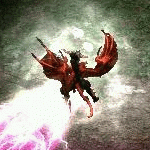

LEVEL CHALLENGE 0
Bored of the repetitive easy beginning with your characters? Want some early bonus to get you started faster? The Level Challenge 0 rewards you for beating a specific monster at a low character level.
Killing a Boss
This challenge requires you to 'kill' a boss. This means that you need to be
physically present at the battle and near the boss when it dies before
you can use the cube recipe that grants you the reward.
If you succeed in killing the target monster, you get a whirling red overlay that looks like three rotating bolts:

You now have 30 seconds to perform the cube recipe. If you are too slow and the red overlay vanishes, you have to do it again!
Warning: This does not work if the monster is killed by reflected damage, due to a Diablo II engine limitation. Please use different means of killing the target.
HOW TO DO THE LEVEL CHALLENGE 0
MAXIMUM AND REQUIRED LEVEL 5

To do this challenge, read the Median Statue carefully:
Median XL - Ultimative XIV
Thanks for playing!
MedianXL-U XIV by MarcoNecroX & BrotherLaz
IMPORTANT NOTE
- Horadric Staff now drops in
the Claw Viper Temple Level 2
- Khalims Will now drops from
Lachdanan in Travincal.
[put in the cube and click transmute]
And then do as it says and cube it.
Instructions
Use the summon quest skill to
summon Volrath the vile.
You need to take down his
traps, and kill him afterwards,
without dying!
Max. Level: 5
Keep in Inventory to Gain Bonus
Required Level: 5
+1 to Level Challenge 0 Quest Skill
Use the +1 to Level Challenge 0 Quest Skill to summon Volrath on an wide open area. He is invulnerable to any damage until you destroy all his traps. Avoid his deadly beam while destroying them.
NOTE: Summon on open space.
Defeat Volrath the Vile to get the Harkon Crystal Gem and a Chipped Gem.
Gem
Keep in Inventory to Gain Bonus
You have 30 seconds to cube the Harkon Crystal Gem with any Gem after killing Volrath, so prepare it in advance and keep your cube empty!
If you are level 5 or below, cube it while the red whirls are on your character to invest power into it.
This recipe has adds the following bonuses:
+(6 to 10) to All Attributes
1% Reanimate as: random (non-elite) Monster
+(201 to 250)% Extra Gold from Monsters
See THIS PAGE for the list of reanimates.
Btw. You gain no experience by killing Volrath or his Traps on Hatred difficulty. Keep trying until you succeed!